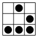
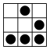

Ninguém Tem Blog!
Este é o serviço livre, anti comercial, anti capitalista e auto financiado de hospedagem de blogs do Hacklab Independência que não usa Wordpress. É sério.
Mas quem não liga pra política e ideologia e quer usar o que já existe, nós também ajudamos.
100% livre
Os blogs são hospedados em um VPS da Gandi.net em Luxemburgo, no servidor do Hacklab Independência, usando 100% software livre, inclusive esta página, cujo código está no Github.
Liberdade
Não gostou da proposta? Vendida(o)!
Aqui no "Ninguém Tem Blog" decidimos não usar Wordpress, mas pra quem gosta (ugh), disponibilizamos uma lista de outros sites também anti comerciais que hospedam blogs libertários em Wordpress.
Aqui também somos anti capitalistas. Mas pra quem gosta de dar seus dados de graça e receber propagandas de coisas inúteis, disponibilizamos uma lista de serviços comerciais de hospedagem de blogs gratuitos.
Também temos uma lista de softwares que podem ser utilizados para hospedagem própria. Para de depender da gente, ou de qualquer pessoa pra botar teu site no ar, configura teu servidor e faz teu próprio blog!
 Mão na massa »
Mão na massa »Anti comercial
Hacklab Independência é um projeto anti capitalista e não promove, tampouco compactua com quaisquer práticas de serviços comerciais. Apesar de usar um serviço comercial da Gandi para a hospedagem e de software não livre do Github para o repositório.
Isto significa que não utilizamos nenhum dado de usuárias(os), não colaboramos com nenhum órgão de segurança / inteligência / governamental / corporativo.
Os únicos apoios comerciais que damos aqui é para a empresa que disponibiliza a hospedagem (Gandi) através de financiamento direto, e o Github através de sugestão de uso e inevitável propaganda neste site. Mas se alguém quiser ajudar a hospedar em um local livre e seguro, temos total disponibilidade.
Este serviço continua disponível graças ao auto financiamento das(os) administradoras(es), usuárias(os) e colaboradoras(es) voluntárias(os).
Gostou? Conte às(aos) amigas(os). Não gostou? Manda para as(os) inimigas(os)!
Kopimi Hacklab Independência 2013-2015. Este site usa Bootstrap e SocialSharePrivacy. Código fonte de ninguem.tem.blog.br


 
